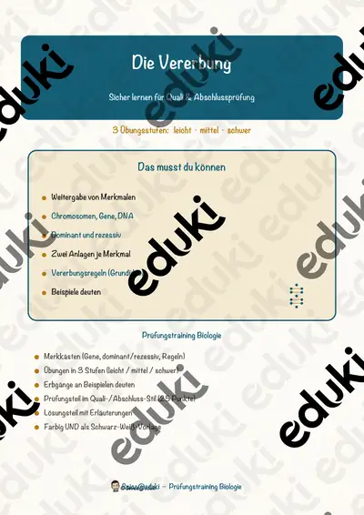
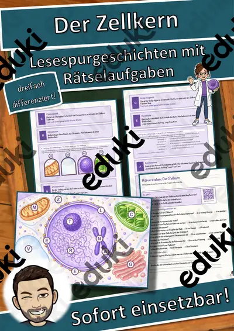
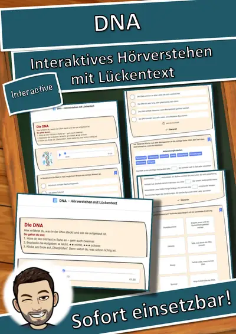

Lesespur: Die Vererbung – Lesespurgeschichte mit Rätseln (Klasse 9)
Begib dich mit deiner Klasse auf eine spannende Lesespur durch die Welt der Vererbung! Die Kinder verfolgen mit der Biologin Frau Dr. Berg den Weg der Erbinformation – von der Körperzelle über den Zellkern, das Chromosom und den Chromatinfaden zur DNA-Doppelhelix, weiter zum Gen und zum Eiweiß bis zum sichtbaren Merkmal und schließlich zum Nachkommen. Ganz nebenbei verstehen sie, wie Merkmale von einer Generation zur nächsten weitergegeben werden. Am Ende jedes Abschnitts verrät ein Hinweis den nächsten Ort (eine Ebene der Vererbung) auf dem Vererbungs-Plan – nur wer richtig liest und mitdenkt, findet den Weg und sammelt alle geheimen Buchstaben zum Lösungswort.
Diese Lesespurgeschichte verbindet motivierendes, sinnentnehmendes Lesen mit echtem biologischem Wissen über Genetik und Vererbung und schult zugleich das genaue Arbeiten. Das Material ist SOFORT EINSETZBAR und in DREI DIFFERENZIERUNGSSTUFEN (leicht ★ / mittel ★★ / schwer ★★★) angelegt, sodass alle Kinder einer Klasse am selben Thema arbeiten können.WICHTIG: Das komplette Material ist sowohl in FARBE als auch in SCHWARZ-WEISS enthalten – ideal zum Sparen von Druckkosten.DAS IST ENTHALTEN
- Lesespurgeschichte in 3 Niveaus (leicht, mittel, schwer)
- farbiger Vererbungs-Plan als Suchkarte
- Hörverstehen mit QR-Code zur MP3 (Kinder hören selbstständig mit Kopfhörern)
- vier Aufträge auf dem Weg: ein Verbinde-Rätsel, ein Genetik-Quiz, eine Rechenaufgabe und ein Steckbrief
- Rätselseite (Wörter-Suchsel + Wissensfragen)
- Ausmalbild zum Thema
- ausführliches Lösungsblatt für die Lehrkraft
- alles zusätzlich als komplette Schwarz-Weiß-VarianteSO FUNKTIONIERT DIE LESESPURDie Kinder lesen ab START, entnehmen dem Text einen Hinweis auf einen Ort (eine Ebene der Vererbung), suchen ihn auf dem Plan und lesen bei dieser Station weiter. An jeder richtigen Station gibt es einen Sammelbuchstaben. Eingebaute Sackgassen (Narbe, Sonnenbräune, Muttersprache, Schwielen) dienen der Selbstkontrolle und machen zugleich den Unterschied zwischen angeborenen und erworbenen Merkmalen deutlich: Erworbenes wird nicht vererbt. Am Ende werden die gesammelten Buchstaben umgestellt und ergeben ein geheimes Lösungswort. (Die Lösungen sind selbstverständlich nur im Lösungsblatt für die Lehrkraft enthalten.)INHALTLICHER SCHWERPUNKTGrundlagen der Genetik: Lage des Erbguts in der Körperzelle und im Zellkern, Aufbau von Chromosom, Chromatinfaden und DNA-Doppelhelix, das Gen als Abschnitt der DNA, der Weg vom Gen über das Eiweiß zum Merkmal, die Weitergabe der Erbinformation an die Nachkommen sowie der Unterschied zwischen angeborenen und erworbenen Merkmalen. Das Material stellt die Zusammenhänge sachlich und faktenbasiert dar und macht die Grundlagen der Vererbung anschaulich erfahrbar.ABGEDECKTER LEHRPLAN (Klasse 9)
- Biologie – Genetik / Grundlagen der Vererbung: Lage und Aufbau des Erbguts (Zellkern, Chromosom, DNA, Gen), vom Gen zum Merkmal, Weitergabe der Erbinformation an die Nachkommen, angeborene und erworbene Merkmale, Bau der DNA (Doppelhelix), Chromosomenzahl des Menschen.
- Deutsch – Lesen mit Texten und Medien umgehen: Lesestrategien anwenden, Texten gezielt Informationen entnehmen, sinnentnehmend und selektiv lesen; Selbstkontrolle und Lesemotivation durch die Lesespur; Zuhören: einem Sachhörtext konzentriert folgen und Wesentliches entnehmen (Hörverstehen mit MP3).
- Mathematik – Rechnen im Sachzusammenhang (Zahlen rund um Zellen und Chromosomen).
- Fächerübergreifend / Kompetenzen: naturwissenschaftliches Verständnis der Vererbung, selbstständiges Arbeiten, genaues Lesen und Prüfen, Konzentration und Ausdauer, kreatives Gestalten (Ausmalbild).
Geeignet für Freiarbeit, Stationenlernen, Vertretungsstunden, Wochenplan und Homeschooling. Klassenstufe 9 (differenziert einsetzbar auch in angrenzenden Jahrgangsstufen).
Ähnliche Materialien

Die Vererbung – Prüfungstraining Biologie (Klasse 9)

Lesespur: Die DNA – Lesespurgeschichte mit Rätseln (Klasse 9)

Lesespur: Der Zellkern – Lesespurgeschichte mit Rätseln (Klasse 9)

Gen Lückentext mit Wortspeicher Hörverstehen und Suchsel

DNA Lückentext mit Wortspeicher Hörverstehen und Suchsel

Eiweiß Lückentext mit Wortspeicher Hörverstehen und Suchsel

DNA – Hörverstehen mit Lückentext (interaktiv)